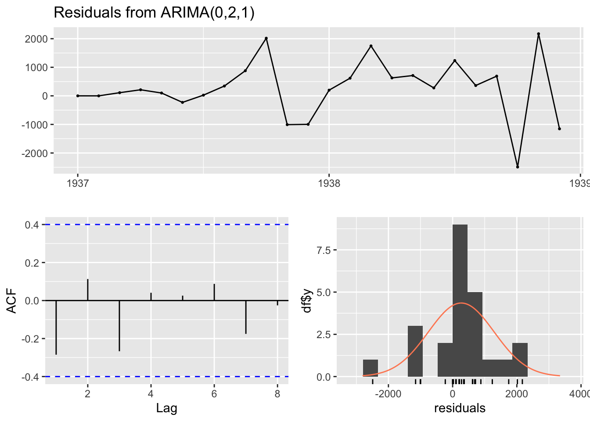
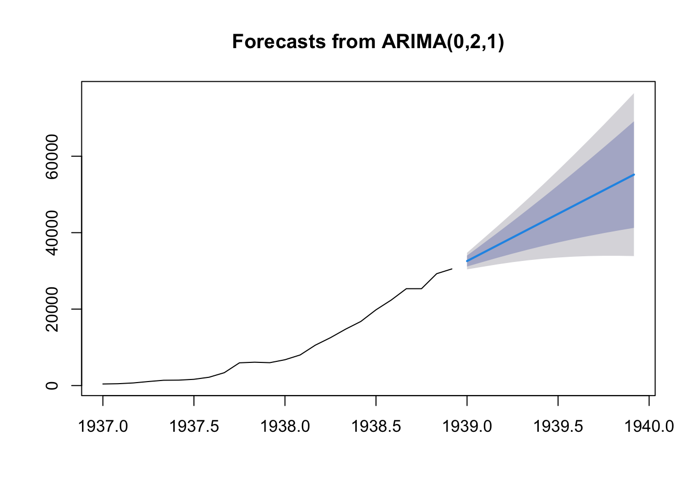
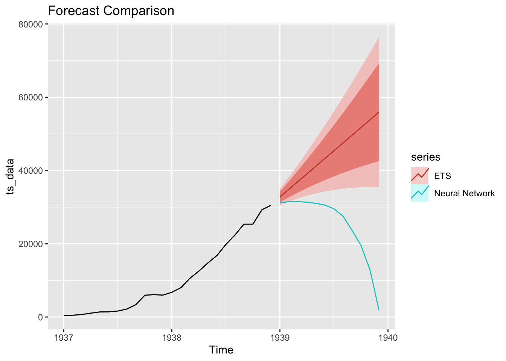
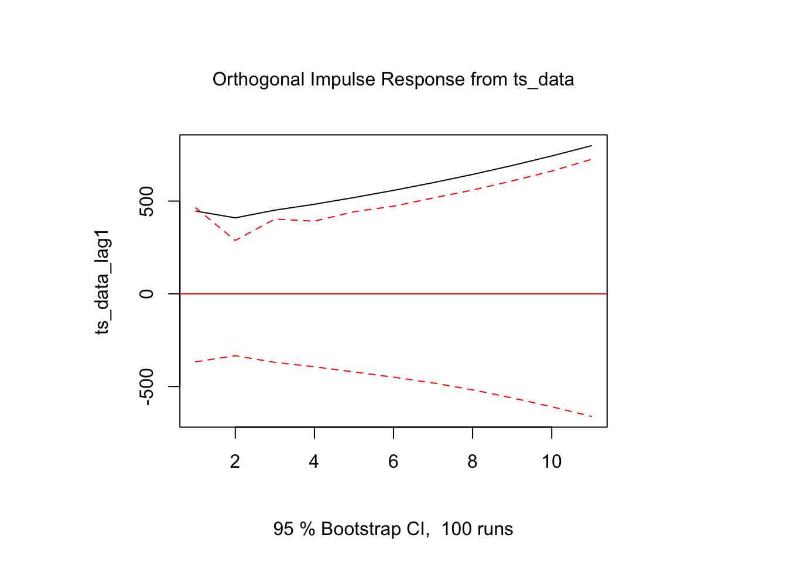
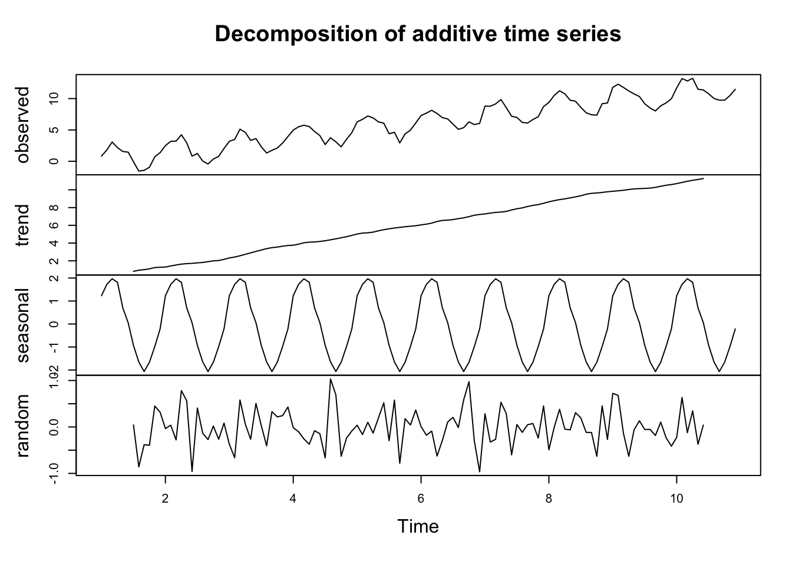
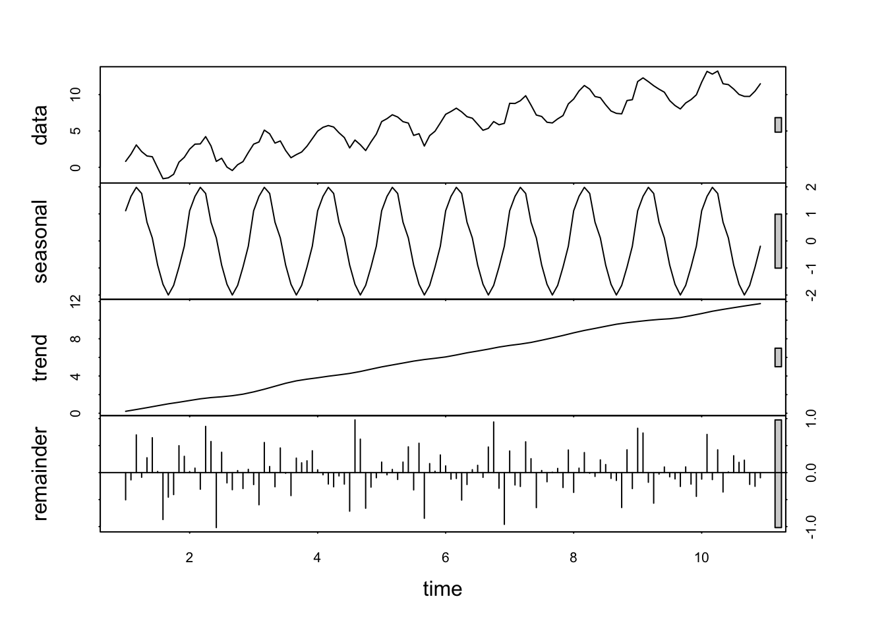
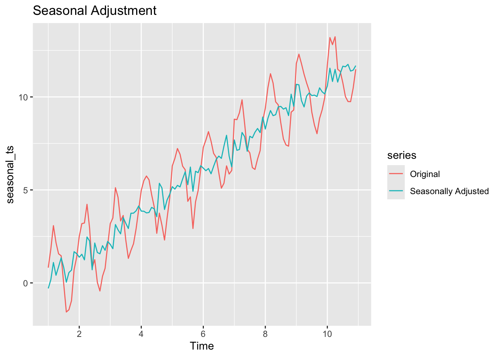
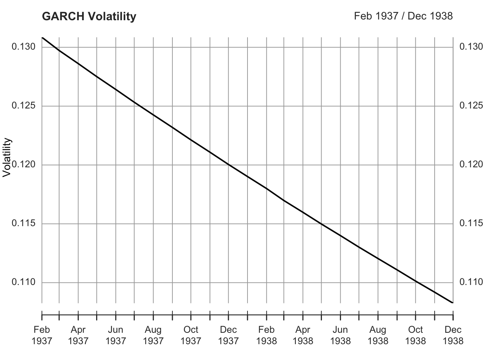

How R’s time series ecosystem provides superior capabilities for forecasting, modeling, and analysis compared to Python
Published
February 10, 2025
1 Introduction
Time series analysis is a critical component of many data science applications, from financial forecasting to climate modeling. R’s time series ecosystem, built on decades of statistical research, provides comprehensive tools that outperform Python’s fragmented approach to time series analysis.
2 R’s Time Series Foundation
2.1 Built-in Time Series Objects
R has native time series support built into the language:
Code
# Create time series objectts_data <-ts(airmiles, frequency =12, start =c(1937, 1))# Basic time series propertiesclass(ts_data)
[1] "ts"
Code
frequency(ts_data)
[1] 12
Code
start(ts_data)
[1] 1937 1
Code
end(ts_data)
[1] 1938 12
2.2 Comprehensive Time Series Classes
R provides multiple time series classes for different needs:
Code
library(xts)library(zoo)# xts for financial time seriesdates <-seq(as.Date("2020-01-01"), by ="month", length.out =24)financial_data <-xts(rnorm(24), order.by = dates)# zoo for irregular time seriesirregular_dates <-sample(dates, 15)zoo_data <-zoo(rnorm(15), order.by = irregular_dates)
3 Forecasting with the forecast Package
3.1 Automatic Model Selection
R’s forecast package provides sophisticated automatic model selection:
Code
library(forecast)# Automatic ARIMA model selectionauto_arima_model <-auto.arima(ts_data)# Comprehensive model diagnosticscheckresiduals(auto_arima_model)

Ljung-Box test
data: Residuals from ARIMA(0,2,1)
Q* = 4.7529, df = 4, p-value = 0.3136
Model df: 1. Total lags used: 5
Code
# Generate forecastsforecast_result <-forecast(auto_arima_model, h =12)plot(forecast_result)

3.2 Multiple Forecasting Methods
R provides diverse forecasting approaches:
Code
# Exponential smoothingets_model <-ets(ts_data)ets_forecast <-forecast(ets_model, h =12)# Neural network forecastinglibrary(nnet)nnetar_model <-nnetar(ts_data)nnetar_forecast <-forecast(nnetar_model, h =12)# Compare forecastslibrary(ggplot2)autoplot(ts_data) +autolayer(ets_forecast, series ="ETS") +autolayer(nnetar_forecast, series ="Neural Network") +labs(title ="Forecast Comparison")

4 Python’s Limited Forecasting
4.1 Fragmented Ecosystem
Python’s time series forecasting is spread across multiple packages:
# Python requires multiple librariesimport pandas as pdimport numpy as npfrom statsmodels.tsa.arima.model import ARIMAfrom statsmodels.tsa.stattools import adfullerfrom sklearn.linear_model import LinearRegression# More complex setup for basic forecasting# Limited automatic model selection# Fewer diagnostic tools
5 Advanced Time Series Modeling
5.1 Structural Time Series Models
R provides sophisticated structural models:
Code
library(bsts)# Bayesian structural time seriesss_model <-AddLocalLinearTrend(list(), ts_data)ss_model <-AddSeasonal(ss_model, ts_data, nseasons =12)# Fit modelbsts_model <-bsts(ts_data, state.specification = ss_model, niter =1000)
=-=-=-=-= Iteration 0 Wed Jun 25 18:27:23 2025 =-=-=-=-=
=-=-=-=-= Iteration 100 Wed Jun 25 18:27:23 2025 =-=-=-=-=
=-=-=-=-= Iteration 200 Wed Jun 25 18:27:23 2025 =-=-=-=-=
=-=-=-=-= Iteration 300 Wed Jun 25 18:27:23 2025 =-=-=-=-=
=-=-=-=-= Iteration 400 Wed Jun 25 18:27:23 2025 =-=-=-=-=
=-=-=-=-= Iteration 500 Wed Jun 25 18:27:23 2025 =-=-=-=-=
=-=-=-=-= Iteration 600 Wed Jun 25 18:27:23 2025 =-=-=-=-=
=-=-=-=-= Iteration 700 Wed Jun 25 18:27:23 2025 =-=-=-=-=
=-=-=-=-= Iteration 800 Wed Jun 25 18:27:23 2025 =-=-=-=-=
=-=-=-=-= Iteration 900 Wed Jun 25 18:27:23 2025 =-=-=-=-=
library(vars)# Create multivariate time series without NAs# Use lagged values instead of differences to avoid NAsmulti_ts <-cbind(ts_data, lag(ts_data, 1))colnames(multi_ts) <-c("ts_data", "ts_data_lag1")# Remove any remaining NAsmulti_ts <-na.omit(multi_ts)# VAR model selectionvar_select <-VARselect(multi_ts, lag.max =4, type ="const")# Fit VAR modelvar_model <-VAR(multi_ts, p = var_select$selection[1], type ="const")# Impulse response analysisirf_result <-irf(var_model, impulse ="ts_data", response ="ts_data_lag1")plot(irf_result)

6 Seasonality and Decomposition
6.1 Classical Decomposition
R provides multiple decomposition methods:
Code
# Create a seasonal time series for demonstrationset.seed(123)n <-120# 10 years of monthly datatrend <-1:n *0.1seasonal <-sin(2* pi * (1:n) /12) *2# Monthly seasonalitynoise <-rnorm(n, 0, 0.5)seasonal_ts <-ts(trend + seasonal + noise, frequency =12)# Classical decompositiondecomp_classical <-decompose(seasonal_ts)# STL decomposition (more robust)decomp_stl <-stl(seasonal_ts, s.window ="periodic")# Plot decompositionspar(mfrow =c(2, 1))plot(decomp_classical)

Code
plot(decomp_stl)

6.2 Seasonal Adjustment
R makes seasonal adjustment straightforward:
Code
library(ggplot2)# Seasonal adjustmentseasonally_adjusted <-seasadj(decomp_stl)# Compare original vs adjustedautoplot(seasonal_ts, series ="Original") +autolayer(seasonally_adjusted, series ="Seasonally Adjusted") +labs(title ="Seasonal Adjustment")

7 Financial Time Series
7.1 High-Frequency Data
R excels in financial time series analysis:
Code
library(highfrequency)library(xts)# High-frequency data analysis# R provides tools for:# - Intraday data# - Realized volatility# - Market microstructure# - Trading algorithms
7.2 GARCH Models
R provides comprehensive GARCH modeling:
Code
library(rugarch)# GARCH model specificationspec <-ugarchspec(variance.model =list(model ="sGARCH", garchOrder =c(1, 1)),mean.model =list(armaOrder =c(1, 1)))# Fit GARCH modelgarch_fit <-ugarchfit(spec, data =diff(log(ts_data)))# Extract and plot volatilityvolatility <-sigma(garch_fit)plot(volatility, main ="GARCH Volatility", ylab ="Volatility")

8 Time Series Visualization
8.1 Specialized Time Series Plots
R provides time series-specific visualizations:
Code
library(ggplot2)library(forecast)# Time series plot with confidence intervalsautoplot(forecast_result) +labs(title ="Time Series Forecast",x ="Time",y ="Value" ) +theme_minimal()
# R's time series tools are built on solid statistical theory# - Box-Jenkins methodology# - State space models# - Bayesian approaches# - Nonparametric methods
10.2 2. Comprehensive Ecosystem
Code
# R's time series packages include:time_series_packages <-c("forecast", # Forecasting"tseries", # Time series analysis"xts", # Extended time series"zoo", # Regular and irregular time series"bsts", # Bayesian structural time series"vars", # Vector autoregression"rugarch", # GARCH models"highfrequency"# High-frequency data)
10.3 3. Research Integration
Code
# R's time series tools are:# - Peer-reviewed# - Published in statistical journals# - Used in academic research# - Continuously updated with latest methods
11 Conclusion
R’s time series ecosystem provides:
Native time series support built into the language
Comprehensive forecasting with automatic model selection
Advanced modeling capabilities for complex time series
Excellent diagnostic tools for model validation
Specialized packages for financial and high-frequency data
Research-grade implementations of cutting-edge methods
While Python has made progress in time series analysis, R remains the superior choice for serious time series modeling and forecasting applications.
---title: "Time Series Analysis: R's Comprehensive Tools"description: "How R's time series ecosystem provides superior capabilities for forecasting, modeling, and analysis compared to Python"date: 2025-02-10categories: [time-series, forecasting, analysis]---## IntroductionTime series analysis is a critical component of many data science applications, from financial forecasting to climate modeling. R's time series ecosystem, built on decades of statistical research, provides comprehensive tools that outperform Python's fragmented approach to time series analysis.## R's Time Series Foundation### Built-in Time Series ObjectsR has native time series support built into the language:```{r}#| echo: true# Create time series objectts_data <-ts(airmiles, frequency =12, start =c(1937, 1))# Basic time series propertiesclass(ts_data)frequency(ts_data)start(ts_data)end(ts_data)```### Comprehensive Time Series ClassesR provides multiple time series classes for different needs:```{r}#| echo: truelibrary(xts)library(zoo)# xts for financial time seriesdates <-seq(as.Date("2020-01-01"), by ="month", length.out =24)financial_data <-xts(rnorm(24), order.by = dates)# zoo for irregular time seriesirregular_dates <-sample(dates, 15)zoo_data <-zoo(rnorm(15), order.by = irregular_dates)```## Forecasting with the forecast Package### Automatic Model SelectionR's forecast package provides sophisticated automatic model selection:```{r}#| echo: truelibrary(forecast)# Automatic ARIMA model selectionauto_arima_model <-auto.arima(ts_data)# Comprehensive model diagnosticscheckresiduals(auto_arima_model)# Generate forecastsforecast_result <-forecast(auto_arima_model, h =12)plot(forecast_result)```### Multiple Forecasting MethodsR provides diverse forecasting approaches:```{r}#| echo: true# Exponential smoothingets_model <-ets(ts_data)ets_forecast <-forecast(ets_model, h =12)# Neural network forecastinglibrary(nnet)nnetar_model <-nnetar(ts_data)nnetar_forecast <-forecast(nnetar_model, h =12)# Compare forecastslibrary(ggplot2)autoplot(ts_data) +autolayer(ets_forecast, series ="ETS") +autolayer(nnetar_forecast, series ="Neural Network") +labs(title ="Forecast Comparison")```## Python's Limited Forecasting### Fragmented EcosystemPython's time series forecasting is spread across multiple packages:```python# Python requires multiple librariesimport pandas as pdimport numpy as npfrom statsmodels.tsa.arima.model import ARIMAfrom statsmodels.tsa.stattools import adfullerfrom sklearn.linear_model import LinearRegression# More complex setup for basic forecasting# Limited automatic model selection# Fewer diagnostic tools```## Advanced Time Series Modeling### Structural Time Series ModelsR provides sophisticated structural models:```{r}#| echo: truelibrary(bsts)# Bayesian structural time seriesss_model <-AddLocalLinearTrend(list(), ts_data)ss_model <-AddSeasonal(ss_model, ts_data, nseasons =12)# Fit modelbsts_model <-bsts(ts_data, state.specification = ss_model, niter =1000)# Extract componentsplot(bsts_model, "components")```### Vector Autoregression (VAR)R excels in multivariate time series:```{r}#| echo: truelibrary(vars)# Create multivariate time series without NAs# Use lagged values instead of differences to avoid NAsmulti_ts <-cbind(ts_data, lag(ts_data, 1))colnames(multi_ts) <-c("ts_data", "ts_data_lag1")# Remove any remaining NAsmulti_ts <-na.omit(multi_ts)# VAR model selectionvar_select <-VARselect(multi_ts, lag.max =4, type ="const")# Fit VAR modelvar_model <-VAR(multi_ts, p = var_select$selection[1], type ="const")# Impulse response analysisirf_result <-irf(var_model, impulse ="ts_data", response ="ts_data_lag1")plot(irf_result)```## Seasonality and Decomposition### Classical DecompositionR provides multiple decomposition methods:```{r}#| echo: true# Create a seasonal time series for demonstrationset.seed(123)n <-120# 10 years of monthly datatrend <-1:n *0.1seasonal <-sin(2* pi * (1:n) /12) *2# Monthly seasonalitynoise <-rnorm(n, 0, 0.5)seasonal_ts <-ts(trend + seasonal + noise, frequency =12)# Classical decompositiondecomp_classical <-decompose(seasonal_ts)# STL decomposition (more robust)decomp_stl <-stl(seasonal_ts, s.window ="periodic")# Plot decompositionspar(mfrow =c(2, 1))plot(decomp_classical)plot(decomp_stl)```### Seasonal AdjustmentR makes seasonal adjustment straightforward:```{r}#| echo: truelibrary(ggplot2)# Seasonal adjustmentseasonally_adjusted <-seasadj(decomp_stl)# Compare original vs adjustedautoplot(seasonal_ts, series ="Original") +autolayer(seasonally_adjusted, series ="Seasonally Adjusted") +labs(title ="Seasonal Adjustment")```## Financial Time Series### High-Frequency DataR excels in financial time series analysis:```{r}#| echo: truelibrary(highfrequency)library(xts)# High-frequency data analysis# R provides tools for:# - Intraday data# - Realized volatility# - Market microstructure# - Trading algorithms```### GARCH ModelsR provides comprehensive GARCH modeling:```{r}#| echo: truelibrary(rugarch)# GARCH model specificationspec <-ugarchspec(variance.model =list(model ="sGARCH", garchOrder =c(1, 1)),mean.model =list(armaOrder =c(1, 1)))# Fit GARCH modelgarch_fit <-ugarchfit(spec, data =diff(log(ts_data)))# Extract and plot volatilityvolatility <-sigma(garch_fit)plot(volatility, main ="GARCH Volatility", ylab ="Volatility")```## Time Series Visualization### Specialized Time Series PlotsR provides time series-specific visualizations:```{r}#| echo: truelibrary(ggplot2)library(forecast)# Time series plot with confidence intervalsautoplot(forecast_result) +labs(title ="Time Series Forecast",x ="Time",y ="Value" ) +theme_minimal()# Seasonal plotggseasonplot(ts_data, year.labels =TRUE) +labs(title ="Seasonal Pattern")```### Diagnostic PlotsR provides comprehensive diagnostic tools:```{r}#| echo: true# ACF and PACF plotspar(mfrow =c(2, 1))acf(ts_data, main ="Autocorrelation Function")pacf(ts_data, main ="Partial Autocorrelation Function")# Ljung-Box testBox.test(residuals(auto_arima_model), type ="Ljung-Box")```## Performance Comparison| Feature | R | Python ||---------|---|--------|| Native Time Series | Yes | Limited || Automatic Model Selection | Excellent | Basic || Forecasting Methods | Comprehensive | Fragmented || Diagnostic Tools | Extensive | Limited || Financial Time Series | Superior | Basic || Seasonality Analysis | Advanced | Basic || Visualization | Specialized | General || Documentation | Excellent | Variable |## Key Advantages of R for Time Series### 1. **Statistical Foundation**```{r}#| echo: true# R's time series tools are built on solid statistical theory# - Box-Jenkins methodology# - State space models# - Bayesian approaches# - Nonparametric methods```### 2. **Comprehensive Ecosystem**```{r}#| echo: true# R's time series packages include:time_series_packages <-c("forecast", # Forecasting"tseries", # Time series analysis"xts", # Extended time series"zoo", # Regular and irregular time series"bsts", # Bayesian structural time series"vars", # Vector autoregression"rugarch", # GARCH models"highfrequency"# High-frequency data)```### 3. **Research Integration**```{r}#| echo: true# R's time series tools are:# - Peer-reviewed# - Published in statistical journals# - Used in academic research# - Continuously updated with latest methods```## ConclusionR's time series ecosystem provides:- **Native time series support** built into the language- **Comprehensive forecasting** with automatic model selection- **Advanced modeling** capabilities for complex time series- **Excellent diagnostic tools** for model validation- **Specialized packages** for financial and high-frequency data- **Research-grade implementations** of cutting-edge methodsWhile Python has made progress in time series analysis, R remains the superior choice for serious time series modeling and forecasting applications.---*Next: [Bioinformatics: R's Bioconductor Ecosystem](/blog/bioinformatics-r-vs-python.qmd)*